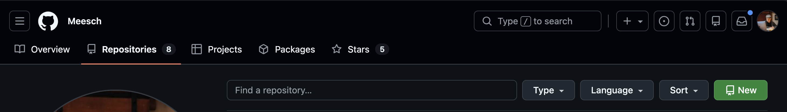
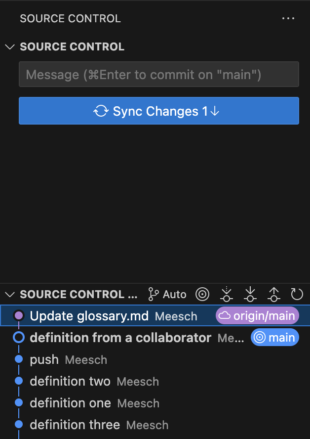

Collaborating with Remote Repositories
Objectives
In this module, you will learn:
- The difference between local and remote repositories
- How to synchronize changes using
git fetch,git pull, andgit push - How Pull Requests support collaborative development
- How Issues can be used to track work and bugs
prerequisites
You should have completed the previous Git modules and have access to a Github account. You should also have a local repository (playground_NAME) available from earlier exercises. Finally, you should have connected your Github account to VSCode so that you can easily work on remote repositories.
Local versus Remote Repositories
So far, all of your Git work has happened on your own machine. These repositories are called local repositories.
A local repository is fast, works without an internet connection, and gives you full control over your work. However, it has one important limitation: nobody else can see it.
To collaborate with others, we usually connect our local repository to a remote repository hosted on a service such as Github, GitLab, or Bitbucket. For the purposes of this course we will use Github.
A remote repository provides several advantages:
- Collaboration between multiple contributors
- Off-site backup of your work (in case of emergency)
- Centralized review processes
- Project management tools such as Issues and Pull Requests
Things to watch out for
A remote repository does not automatically stay synchronized with your local repository.
Changes made locally are not visible remotely until you push them.
Changes made remotely are not visible locally until you fetch and pull them.
The connection between a local and remote repository is often called a remote.
You can inspect configured remotes using:
git remote -v
Most repositories use a remote named origin.
Pushing Changes
After making commits locally, you can upload them to the remote repository. The git push command publishes your work so that other collaborators can access it.
Push rejected?
If somebody else has pushed commits since your last synchronization, Git may reject your push.
In that case:
- Pull the latest changes.
- Resolve conflicts if necessary.
- Push again.
- Remember that you should try to keep your work on a separate branch and that sharing a single branch with someone else will almost always lead to mishaps.
Exercise: the first push
In this exercise, you will create a remote for your local repository.
- Step 1: Click Publish Branch in Source Control.
- Step 2: Select Publish to Github public repository (yes it will be okay, you can make it private after the course is over).
- Step 3: Verify that the repository appears on your Github page.
- Step 1: Go to your personal Github page > Repositories, and select New.

- Step 2: Create a new remote repository with the same name as your local sandbox repository
- Step 3: After creation, go back to your local terminal, navigate to your working directory and run:
git remote add origin https://github.com/<YOUR_GITHUB_PROFILE>/sandbox_<YOUR_NAME>.git - Step 4:
git checkout main - Step 5:
git push -u origin main
the -u flag
The -u flag in git push -u origin <branch> is a shorthand for --set-upstream. It creates a tracking reference that links your local branch to a specific remote branch, allowing you to use git pull or git push without arguments in the future.
- Step 6: Verify that the repository now is filled with your code on your Github page.
Exercise: pushing to someone else's repo
In this exercise, you will clone someone else's repository and push a term to their glossary. First of all, find someone else and ask if they can send you the url to their remote git repository (e.g.: https://github.com/Meesch/sandbox_MEES.git). You can find the remote url here: !(github-clone)[https://github.com/Meesch/sandbox_MEES.git]
- Step 1: Open a new VSCode window.
- Step 2: under Start, select Clone Git repository...
- Step 3: Paste the remote url in the pop-up bar
- Step 4: Verify that you now have access to another sandbox repo!
- Step 5: Add a definition to the glossary and commit it.
- Step 6: Click Sync Changes to push your commit.
- Step 1: Run
git clone <REMOTE_URL> - Step 2: Add a definition to the glossary and commit it.
- Step 3: Run
git push
Fetching Changes
When other people make changes to a remote repository, your local repository does not automatically update.
To retrieve information about changes on the remote server without modifying your own work, use:
git fetch
- Fetch
- the process of downloading commits, branches, and metadata from a remote repository without modifying your current files.
Think of fetch as asking:
"What has changed on the server since I last checked?"
After fetching, you can inspect the new commits before deciding whether to pull them. To pull a commit means to apply the remote commits to your local repository.
Fetch versus Pull
git fetch only downloads information, i.e. it checks for new commits and shows them to you.
git pull downloads the commits and immediately attempts to integrate it into your local repository.
Pulling Changes
Once you have inspected the changes, you can integrate them into your current branch.
- Pull
- the process of fetching changes from a remote repository and merging them into the current branch.
The command: git pull is effectively a shortcut for:
After pulling, your local branch will be updated with the latest changes from the remote repository.
Exercise: fetch and pull remote changes
- Step 1: Ensure that a new commit exists on Github that is not yet present locally (ideally by giving someone else access to your repository).
- Step 2: Open the Source Control menu (
...). - Step 3: Select Fetch.
- Step 4: Select the Source Control Graph again and observe that there is a new commit in the graph that is ahead of your current local pointer:

- Step 5: Click on the remote commit to see the changes made in that commit.
- Step 6: If you approve of the changes, you can click Sync Changes
- Step 1: Ensure that a new commit exists on Github that is not yet present locally(ideally by giving someone else access to your repository).
- Step 2: Run
git fetch - Step 3: Look at the new commit that has come in by running
git log --oneline --all - Step 4: Copy the commit ID from the remote commit and run
git diff <commit_id>to see the changes made. - Step 5: If you approve of the changes, run
git pull - Step 6: Verify that the changes have been made locally.
Pull Requests
When working in teams, it is generally considered bad practice to commit directly to the main branch (like you have been doing so far). Instead, developers create a feature branch, complete their work, and then submit a Pull Request.
- Pull Request (PR)
- a request to merge changes from one branch into another branch, usually accompanied by code review and discussion. You request to pull one branch into another. This terminology is proprietary to Github, Gitlab calls these Merge Requests for example.
Pull Requests provide:
- An option to review changes and discuss them
- Documentation of decisions
- Automated testing
A typical workflow looks like this:
- Create a feature branch.
- Develop and commit changes.
- Push the branch to Github.
- Open a Pull Request.
- Review and discuss the changes.
- Merge the Pull Request.
- Delete the feature branch.
Exercise: create a Pull Request
- Step 1: On someone else's repository, create a branch called
feature/add-glossary-entry. - Step 2: Add a new glossary definition and commit the changes.
- Step 3: Push the branch to Github.
- Step 4: Open the Github repository in your browser and navigate to the Pull Requests tab.
- Step 5: Select New Pull Request.
- Step 6: Select your branch and the branch you want to merge into.
- Step 7: Write a short title and description.
- Step 8: Create the Pull Request.
Exercise: Review a Pull Request
- Step 9: Review the displayed changes that someone else proposed to your repo in a Pull Request.
- Step 10: Merge the Pull Request.
- Step 11: Delete the feature branch.
- Step 12: Verify that the proposed changes have been made to the repository.
Issues
Most collaborative software projects track planned work using Issues.
- Issue
- a tracked task, bug report, enhancement request, or discussion item within a repository.
Many teams create an issue before starting work and then link a Pull Request or commit to that issue, using its ID. Moreover, you can link issues to one another. It helps teams keep track of the many features and bugs that still need to be addressed.
For example, if you create Issue #12: Add glossary search functionality, you can use the ID #12 in your commit message or Pull Request description, and they will be linked. Github can then automatically close Issues when a Pull Request is merged. This is not obligatory, you can also close issues manually.
Works cited:
https://git-scm.com/book/en/v2/ https://docs.github.com/en/pull-requests https://docs.github.com/en/issues https://carpentries-incubator.github.io/python-intermediate-development/14-collaboration-using-git.html